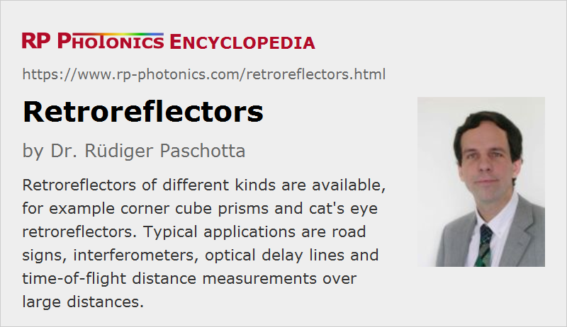

Retroreflectors
Definition: optical devices which reflect light in a direction which is parallel to the incident beam
German: Retroreflektoren
How to cite the article; suggest additional literature
Author: Dr. Rüdiger Paschotta
Retroreflectors are optical devices which reflect light in a direction which is parallel to the incident beam – and this for some range of beam directions. This is profoundly different from reflections at ordinary mirrors, where a light beam is reflected back in itself only for normal incidence on the mirror surface; any tilt of the mirror will modify the direction of the reflected beam. For some retroreflectors, there is a parallel offset of the reflected beam, but the direction is always quite precisely opposite to that of the incoming beam, limited only by the accuracy of the device.
Different kinds of retroreflectors are available:
- There are corner reflectors, e.g. in the form of corner cube prisms, where reflections occur on three mutually orthogonal mirror surfaces.
- A cat's eye reflector contains a focusing lens in conjunction with a curved mirror. It can also be realized in the form of a glass sphere with an appropriate refractive index. That kind of retroreflector effect is known from the eyes of cats, where the eye's lens does part of the focusing and some reflection occurs on the retina, forming a quite imperfect retroreflector.
- There are nonlinear retroreflectors based on stimulated Brillouin scattering. Here, the reflection or occurs at a Bragg grating in a nonlinear material, which is related to the incoming and reflected optical wave and automatically has the correct orientation for precise retroreflection. Besides, there is also the phenomenon of phase conjugation and a down-shift of the optical frequency of the reflected beam. The nonlinear reflection works only for sufficiently high input intensity of the incident beam and with a limited reflectance.
The reflectance of a retroreflector is usually substantially lower than that of a highly reflecting laser mirror. Nevertheless, the directionality of the reflection can create a substantially increased brightness of an illuminated object.
Depending on the type of retroreflector, there can be substantial changes of polarization direction, and image rotation can occur.
There are “spoiled” retroreflectors, intentionally made such that the direction of the reflected beam is somewhat modified.
There are also a kind of retroreflectors where the retroreflection principle works only in a plane; tilts of the reflector in one direction still lead to deviating directions of the reflected beam. This is the case, for example, for prisms with two instead of three reflections.
Applications of Retroreflectors
Retroreflectors are used where it is essential to maintain the direction of the reflected beam without precisely keeping the right orientation of the reflecting device. Some examples:
- A few retroreflectors have been placed on the Moon, e.g. during the Apollo missions, and can be used for time-of-flight measurements of the distance between Earth and Moon (lunar laser ranging; see also the article on laser rangefinders). The retroreflector property is essential for increasing the amount of reflected light received in a large distance.
- Similarly, various satellites are equipped with retroreflectors for facilitating laser tracking of the position.
- Retroreflectors are used on some road signs and vehicles, e.g. bicycles, for better visibility under illumination with headlights of cars, for example. Here, exact retroreflection would not be helpful, because a road sign or a bicycle should be seen by the car's driver rather than the headlights, but some degree of directionality of an imperfect retroreflector improves the visibility.
- There are barcode labels based on retroreflective materials, which can be scanned from large distances.
- Interferometers and optical delay lines often utilize a retroreflector for avoiding overly critical alignment, which would be problematic particularly for moving parts.
Suppliers
The RP Photonics Buyer's Guide contains 15 suppliers for retroreflectors. Among them:
Questions and Comments from Users
Here you can submit questions and comments. As far as they get accepted by the author, they will appear above this paragraph together with the author’s answer. The author will decide on acceptance based on certain criteria. Essentially, the issue must be of sufficiently broad interest.
Please do not enter personal data here; we would otherwise delete it soon. (See also our privacy declaration.) If you wish to receive personal feedback or consultancy from the author, please contact him e.g. via e-mail.
By submitting the information, you give your consent to the potential publication of your inputs on our website according to our rules. (If you later retract your consent, we will delete those inputs.) As your inputs are first reviewed by the author, they may be published with some delay.
See also: corner cube prisms, laser rangefinders, reflectance
and other articles in the category general optics
|  |
If you like this page, please share the link with your friends and colleagues, e.g. via social media:
These sharing buttons are implemented in a privacy-friendly way!